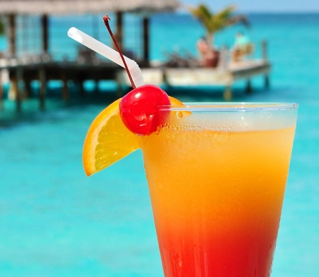

SEX ON THE BEACH COCKTAIL = R60
Pre time:
10 mins
Yield:
4
Ingredients
8 ounce strawberries, stemmed and sliced
1/2 teaspoon vanilla extract
1 pint vanilla ice cream
1/4 cup of milk
Steps
Blend half of strawberries, 1/4 tsp.vannila, 1 cup ice cream and 1 Tbsp. milk in blender until smooth.
Pour into 2 glasses. Reapet with remaining strawberries, vanilla, ice cream and milk. Serve immediately